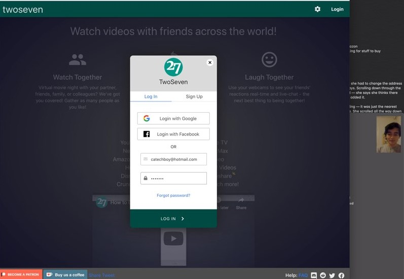

NETFLIX AND CHILL
PROBLEM SPACE
Whether it’s going to the movie theater or gathering together around the TV, watching movies/television is largely an experience that is enjoyed collectively. However, with streaming platforms becoming the main mode to watch movies nowadays, one glaring omission within most of these platforms is the ability to watch movies and shows with friends online. Usually, third-party programs are needed to be able to achieve this, and these programs often require payment or are even prohibited from working with several streaming services because of restrictions related to copyright and licensing. The goal of this assignment is to integrate the social experience of watching entertainment into the most popular streaming platform, Netflix, by creating a feature where one can interact and watch movies and shows with friends.
CONTEXTUAL INQUIRY
The user for our contextual inquiry is a student in our class,
Cameron Franz, who has frequently uses Netflix and also has used it to watch movies/shows with friends online.
The task he was given was pretty straightforward: simply try to watch a movie online on Netflix with a
friend. In this instance,
the friend, Reem Larabi, was also in the room with us (and is also in this class!).
The first thing he did was set up a Facetime call with Reem. This is
actually quite inconvenient because this required opening a separate window and
trying to split the screen between the streaming video and the Facetime call.
Then, Cameron logged onto twoseven.xyz, which is a website that allows friends to watch movies together.
However, he had to install an additional Chrome extension to use the Netflix feature, and had to coordinate with
Reem to make sure she also had it installed.


After installing the Chrome extension, the Netflix window on twoseven was stuck loading for a few minutes,
and Cameron had to refresh multiple times before the page was properly shown. Eventually, the page
loaded and Cameron was able to
invite Reem’s account and she was able to join the twoseven room.
However, when a movie was picked by Cameron, we compared both laptops to see if the
website was working properly. Unfortunately, the video was not in sync and
there was lagging in the two laptops, with the video on one laptop being several
seconds behind, or at some moments, completely not playing for a bit. Additionally,
playing or pausing the video on one laptop did not immediately play or pause it on
the other, and this delay added to the asynchronous viewing.
From the results of this task, it seems less than optimal to watch movies
together this way. The interface felt clunky and setting up the movie and getting it
started took quite some time. And even after doing so, the movie was not even
functioning most of the time.
To be able to
successfully watch movies together on Netflix, one would have to experiment with and
have knowledge of different third-party programs/extensions (twoseven and
Netflix Party, for example) but even with these existing programs, they are not guaranteed to
work. (Also, from past personal experience, when trying
to share my Netflix screen in Zoom or Discord, the screen was blacked out because of
copyright problems, so that is another method that would also not work.) The online reviews for
these respective programs also indicate a lack of
satisfaction with these methods — reviewers cite frequent disconnections, issues resulting from browser
differences, and audio/video playback issues as reasons why attempting to watch
movies online together on these services is a frustrating experience.
To organize the actions involved in the task and the resulting observations/interpretations, a sequential model was made
using Miro.
The breakdowns helped generate many ideas for possible solutions and created much room for
opportunity to improve upon what’s currently out there.

PROTOTYPE
With the ideas of the sequential model in mind, I
did my prototyping on Figma to best replicate what I envisioned would make for a better social experience on Netflix.
(Also, just for fun, I made the Netflix selections some of
my favorite horror movies since it's October!)
Below are the features I implemented in the prototype, along with a gif demo:
FEATURES:
Invite a friend to a movie/request to join a friend’s movie
To add someone to a movie, one can simply click the
“Netflix and Chill” icon while viewing a movie, and this will
direct the user to their friend list. There, one can invite
the friend to a movie, or join a friend’s movie if possible.
Whatever option that is picked sends a request to the friend,
and if accepted, the friends can watch the film together
using video/voice/text chat. Having all of this within the Netflix interface
fixes the problem of having to download buggy third party programs and
use separate windows for communication services (video/voice/text messaging).
Netflix Friend List
The friend list features the online status of each user,
their current activity, and a user-inputted status.
The ability to see what others are watching was inspired by the Spotify feature that allows users to see what their friends are currently listening to. Within this friend list also includes a list of recommendations from friends.
Netflix recommendations
Watching movies is a shared experience, and to facilitate the social aspect of movie-watching, an option to recommend movies to fellow friends is another feature on this prototype. To do this, one simply has to go to their friend list and click the button “Send a recommendation”, which will prompt the user to pick which friend to recommend a movie to
and what movie they want to recommend. Also, as mentioned earlier, within the
friend list, one can see all the recommendations from friends as well.
EVALUATION
(Sorry if the audio is a bit low, I was off the screen and the mic didn't catch a lot
of what I was saying)